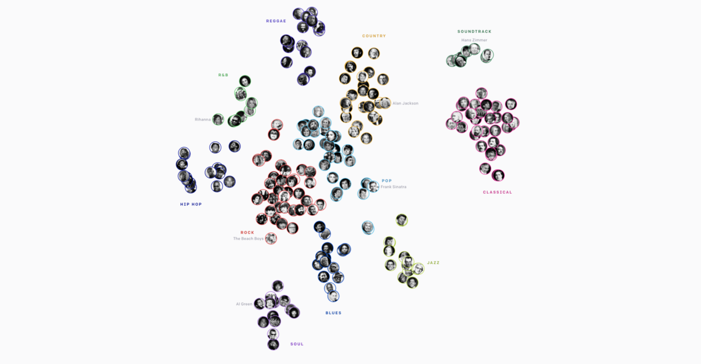
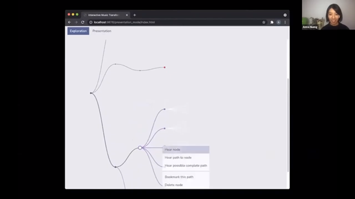

I have been a volunteer at ISMIR's conference this year. It has been my first ever conference and this year was online. These are the things I liked the most and a review of the presentations I attended during the conference.
Introduction
The first session that I attended was an introduction to the conference with the most well-known researchers in the MIR filed such as Meinard Müller, Masataka Goto, Emilia Gómez or Geoffrey Peeters among others.
There was a discussion about questions that newcomers asked about the conference such as: is it mandatory to read and study a paper before a attending a poster session and ask the authors about something? The common answer was “no”, the poster session is done to ask general or specific questions so there’s no reason of being afraid of asking a simple or “stupid” question, but if you are interested in the topic of the paper in particular it is also good to read the paper before to take advantage of asking questions to the authors because perhaps there won’t be more opportunities of having the authors live to answer them. Other question was if it was correct or not sending emails to authors or renowned researcher in the field to ask doubts (general or about a particular paper), and again the answer was that is perfectly correct to do it and there’s no reason to be afraid or shy of that.
What I loved about the researchers answers were that they all seemed very opened to answer and meet newcomers to the field.
I remember that Meinard Muller said that in his first conference he met Masataka Goto, one of his “heroes” and he expected Masataka to arrive with an helicopter as if it was a film, but it was very different, he was “just there”, he greet and met him and they had a very interesting conversation. And that’s why newcomers do not need to be shy or afraid when meeting or asking well-known researchers at conferences because they are opened and happy to meet newcomers or other researchers in the field (but of course this will depend on the person).
Poster Sessions
The poster sessions were the perfect place to ask questions to the authors. They're very well organized and I could join some of them.
About the papers, in this moment I am interested in music composition and instruments classification so the papers I was most interested in were:
Industry Presentations
I attended three industry presentations:
Keynotes
Musenet & Jukebox, Human and AI Composition. The first keynote I attended (and the first keynote I attend in a conference) was the presentation “musenet & Jukebox, Human and AI Composition” by Christine McLeavey (OpenAI) who is the first author of both Musenet and Jukebox. The keynote exposed very insightful ideas about creating music (in the audio domain) with Deep Learning. Not only McLeavey showed some examples about the potential of the models developed by the OpenAI team but she also pointed out new directions in music composition such as the power of AI in the creation of new music genres. She showed how the Jukebox’s embeddings looked like to compose composers, music genres and styles and she exposed how many “white spaces” were between the existing music genres, spaces that might be filled by new genres (maybe) created by AI.
Music AI - Perspectives on authorship with creative artificial intelligence in music. The keynote “Music AI - Perspectives on authorship with creative artificial intelligence in music” by the Division of Media Technology ad Interaction Design, KTH Royal Institute of Technology. This keynote was very interesting to know more about ownership of the music composed with AI. The fact that DL models are generating music leads us to the question about authorship. Who is the author of the music composed by a neural network? The person who builds the model, the people who made the dataset…? But, are neural networks capable of compose new music, that is, extrapolate, or they just interpolate between the training samples? And in that case, how do we measure the creativity or the similarity between music and in what domain, symbolic or audio? In this post and paper, we show a deeper discussion about this topics.
Tuning Music Transformer. I atended the Keynote “Tuning Music Transformer” by Anna Huang. It was very inspiring to see how a DL model for music composition could be used to . Huang presented a very smart and intelligent way to use the composing capabilities of the model in a tree UX interface. The model generates a short sequence (a bar or a few bars) of music in a starting node. Then, the user can open the node and some branches with more nodes are presented, where each node presents a different continuation of the music sequence of the initial node. The user can select the node with the music idea that he or she likes the most and the rest of the branches close to let the new selected node open new branches with new music continuation sequences out of it. There’s an example here video at 23:10 (NLP4MuSA conference) where she shows that idea of the tree.

Conclusions.
Apart from the sessions that I could join there were more trivial sessions, tutorials, jam sessions and more interesting keynotes in the conference.
As a volunteer of the general chairs I didn’t have lots of things to do, but I was hanging out in the virtual room meeting and it was an amazing experience being the first time at a conference even if it was virtual.
I could learn more about the MIR field and see where the new research directions are pointing to. The keynotes, industry presentations and poster sessions were very well organized and there’re all very interesting and inspiring.
I highly recommend being a volunteer specially for newcomers because it’s the perfect way of meeting people of the field and making a first contact with the conference.
Leave a comment